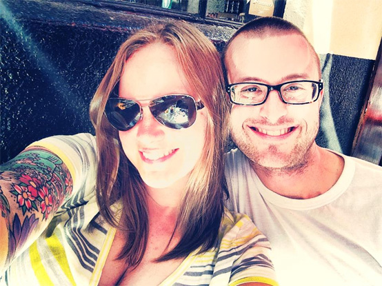

About Just Blink Images
Photography has been my passion for about 18 years and am just beginning my professional career. I offer a great service with a full-studio setup, with fully edited/full size files at a lower cost than most professional photographers.
For my clients sessions, it's always best and suggested to create and share a Pinterest board with your style of photography and the types of scenes you are looking for. Many photographers have different styles and I like to customize that experience for my clients. I also like to discuss expectations, as well as provide what I call a "session flow" or simply, the plan for the session prior to their session to ensure we are capturing all requested poses/scenes. In addition, I include tips and tricks to ensure their session is a positive and successful experience! All clients will receive a private online viewing gallery, where they can view their photos, share, and like them, all from their personal gallery!